# diseases label mappinglabel_mapping <-c("HIGH_BP"="High Blood Pressure","HIGH_CHOL"="High Cholesterol","DIABETES"="Diabetes","HEART"="Heart Disease","OVERWEIGHT"="Overweight","COPD"="COPD", "IMMUNE"="Auto-immune disease","DEPRESSION"="Depression","ANXIETY"="Anxiety","PTSD"="PTSD","ALC_DIS"="Alcohol Use Disorder","DRUG_DIS"="Drug Use Disorder")
3.3 Distribution of Independent Variables
3.3.1 Overall Independent Variables Distribution by Diverging Bar Chart
We first dive into the independent factors, namely the twelve health condition variables selected in our data set. We categorized all of them into three groups based on their characteristics. This grouping provides a logical framework for the subsequent analysis, and the categories are consistently referenced throughout the study. By organizing data this way, we aim to clearly present the characteristics of each variable and their potential influence on alcohol use. The three groups are given as follows:
Chronic Diseases: Includes Overweight, High Cholesterol, High Blood Pressure, Heart Disease, Diabetes, COPD, and Auto-immune disease.
Mental Health Conditions: Includes PTSD, Depression, and Anxiety.
Substance Use Disorders: Includes Alcohol Use Disorder and Drug Use Disorder.
Code
# Prepare data with groups and filter unused conditionsdata_grouped <- data |>pivot_longer(cols =everything(), names_to ="Condition", values_to ="Response") |>mutate(Group =case_when( Condition %in%c("HIGH_BP", "HIGH_CHOL", "DIABETES", "HEART", "OVERWEIGHT", "COPD", "IMMUNE") ~"Chronic Diseases", Condition %in%c("DEPRESSION", "ANXIETY", "PTSD") ~"Mental Health Conditions", Condition %in%c("ALC_DIS", "DRUG_DIS") ~"Substance Use Disorders" )) |>filter(!is.na(Group)) |>mutate(Condition = label_mapping[Condition])# Prepare summary data for diverging bar chartdata_summary <- data_grouped |>count(Group, Condition, Response) |>group_by(Group, Condition) |>mutate(Percentage = n /sum(n) *100,Side =ifelse(Response =="Yes", Percentage, -Percentage))# Plot with facet_grid for more flexible layoutggplot(data_summary, aes(x = Condition, y = Side, fill = Response)) +geom_bar(stat ="identity", width =0.7) +coord_flip() +facet_grid(rows =vars(Group), scales ="free_y", space ="free") +scale_y_continuous(labels = abs) +labs(title ="Health Conditions by Group",x ="Condition",y ="Percentage",fill ="Response" ) +theme_minimal() +theme(axis.text.x =element_text(angle =45, hjust =1),strip.text.y =element_text(angle =0, hjust =1), # Tilt group names horizontallystrip.text =element_text(face ="bold"),legend.position ="bottom" ) +scale_fill_manual(values =c("No"="#E69F00", "Yes"="#56B4E9"))
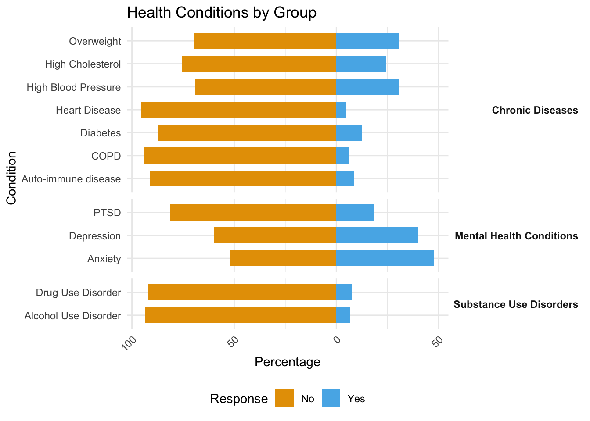
Fig1: Diverging stacked bar chart
We now observe the distributions of each variable. Figure 1 shows a bar chart that compares how many people in each category of health conditions responded “Yes” (they have the condition) or “No” (they do not have the condition). The bars pointing to the right represent those who answered “Yes,” while the bars pointing to the left represent those who answered “No.” We can see that many people report mental health diseases, with almost half of the respondents answering “Yes” to Anxiety. In addition, they are not many people reporting substance use, either drug or alcohol.
3.3.2Mental Health Conditions Often Occur Together
We can also examine the co-occurrence of different health challenges. The following heatmap shows how often different diseases occur together. The darker the color, the more likely two diseases are to appear in the same individuals. A key takeaway from this graph is that mental health conditions — like anxiety, depression, and PTSD — tend to appear together more often. However, for other diseases, such co-occurrence is relatively weak. Additionally, these mental conditions seems appear alongside substance use disorders (e.g., alcohol and drug abuse), forming a distinct group.
Code
# Convert Yes/No responses to numeric (Yes = 1, No = 0)data_numeric <- data |>mutate(across(everything(), ~ifelse(. =="Yes", 1, 0)))# Calculate correlations between health conditionscor_matrix <- data_numeric |>select(names(label_mapping)) |>cor()# Apply the mapping for better labelscolnames(cor_matrix) <-rownames(cor_matrix) <- label_mapping[colnames(cor_matrix)]# Convert correlation matrix to long format for ggplotcor_melted <-melt(cor_matrix)# Plot the heatmapplot2 <-ggplot(cor_melted, aes(x = Var1, y = Var2, fill = value)) +geom_tile(color ="white") +scale_fill_gradient2(low ="#3182BD", mid ="white", high ="#EC6B80", midpoint =0,name ="Correlation") +labs(title ="Co-Occurrence of Health Conditions",x ="Condition",y ="Condition" ) +theme_minimal() +theme(axis.text.x =element_text(angle =45, hjust =1),axis.title =element_text(face ="bold"),panel.grid.major =element_blank(),panel.grid.minor =element_blank() )plot2
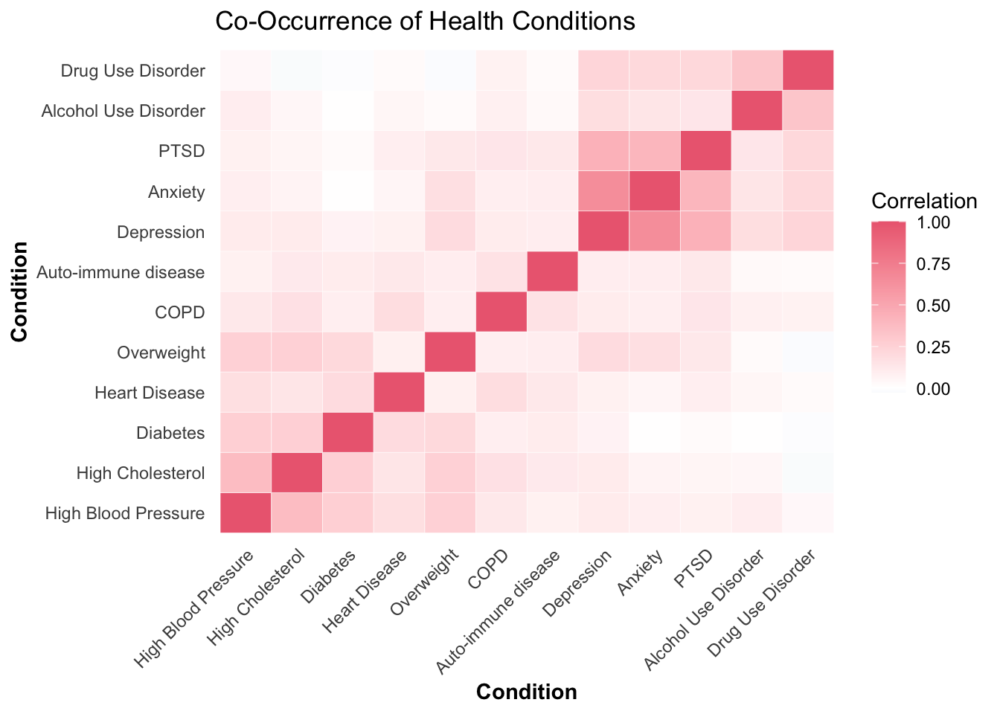
Fig2: Co-occurrence of Mental Health Conditions
3.4 Distribution of Dependent Variables
3.4.1 Mapping Survey Responses
Code
# mapping Alcohol Consumption Frequencyalcohol_mapping <-c("I have never drunk alcohol or have only tried it once or twice."=1,"I used to drink but no longer drink alcohol."=2,"I typically drink alcohol less often than once a month."=3,"I typically drink alcohol more than once a month but not weekly."=4,"I typically drink alcohol 1-2 days per week."=5,"I typically drink alcohol 3-5 days per week."=6,"I typically drink alcohol 6-7 days per week."=7)data <- data |>mutate(ALCOHOL_FREQ =case_when( ALCOHOL =="I have never drunk alcohol or have only tried it once or twice."~1, ALCOHOL =="I used to drink but no longer drink alcohol."~2, ALCOHOL =="I typically drink alcohol less often than once a month."~3, ALCOHOL =="I typically drink alcohol more than once a month but not weekly."~4, ALCOHOL =="I typically drink alcohol 1-2 days per week."~5, ALCOHOL =="I typically drink alcohol 3-5 days per week."~6, ALCOHOL =="I typically drink alcohol 6-7 days per week."~7,TRUE~NA_integer_ ))# mapping Alcohol Consumption Quantityalc_num_mapping <-c("Question was not asked"=1,"Did not consume any alcohol in the past 30 days"=1,"Average of 1 or fewer drinks per week"=2,"Average of 2-4 drinks per week"=3,"Average of 5-7 drinks per week"=4,"Average of 8-15 drinks per week"=5,"Average of more than 15 drinks per week"=6)data <- data %>%mutate(ALC_NUM_FREQ =case_when( ALC_NUM =="Question was not asked"~1, ALC_NUM =="Did not consume any alcohol in the past 30 days"~1, ALC_NUM =="Average of 1 or fewer drinks per week"~2, ALC_NUM =="Average of 2-4 drinks per week"~3, ALC_NUM =="Average of 5-7 drinks per week"~4, ALC_NUM =="Average of 8-15 drinks per week"~5, ALC_NUM =="Average of more than 15 drinks per week"~6,TRUE~NA_integer_ ))
Code
# Shorter mappings for ALCOHOL_FREQ ALC_NUM_FREQalcohol_short_labels <-c("1"="Never/Once","2"="Used to drink","3"="< Monthly","4"="> Monthly","5"="1-2 days/week","6"="3-5 days/week", "7"="6-7 days/week")alc_num_short_labels <-c(# "1" = "Not asked","1"="No alcohol","2"="≤1 per week","3"="2-4 per week","4"="5-7 per week","5"="8-15 per week", "6"=">15 per week")
Bellowing are two tables showing the mapping between the original answers and their corresponding abbreviation answers for both alcohol consumption frequency and quantity. We create these mappings to simplify the data visualization.
It is important to note that in the original survey, people who answered “I have never drunk alcohol or have only tried it once or twice” or “I used to drink but no longer drink alcohol” to the frequency question were not asked the quantity question and were marked as “not asked.” However, these individuals can effectively be classified as “non-drinkers,” as they currently consume very little to no alcohol. Therefore, we combined these individuals with those who answered “Did not consume any alcohol in the past 30 days” to form the “no drink” group.
Code
table_data_1 <-data.frame(Original_Answer =names(alcohol_mapping),Abbreviation_Answer = alcohol_short_labels[as.character(alcohol_mapping)])table_data_2 <-data.frame(Original_Answer =names(alc_num_mapping),Abbreviation_Answer = alc_num_short_labels[as.character(alc_num_mapping)])kable(table_data_1, caption ="Alcohol Consumption Frequency", align ="c", col.names =c("Original Answer", "Abbreviation Answer")) %>%kable_styling(full_width = F, position ="left") %>%footnote(general ="When it comes to alcohol, which of the following best describe you?",general_title ="Survey question:",footnote_as_chunk =TRUE)
Alcohol Consumption Frequency
Original Answer
Abbreviation Answer
I have never drunk alcohol or have only tried it once or twice.
Never/Once
I used to drink but no longer drink alcohol.
Used to drink
I typically drink alcohol less often than once a month.
< Monthly
I typically drink alcohol more than once a month but not weekly.
> Monthly
I typically drink alcohol 1-2 days per week.
1-2 days/week
I typically drink alcohol 3-5 days per week.
3-5 days/week
I typically drink alcohol 6-7 days per week.
6-7 days/week
Survey question: When it comes to alcohol, which of the following best describe you?
Code
kable(table_data_2, caption ="Alcohol Consumption Quantity", align ="c", col.names =c("Original Answer", "Abbreviation Answer")) %>%kable_styling(full_width = F, position ="left") %>%footnote(general ="During the past month, how many alcoholic beverages (such as beer, wine, malt beverage, liquor) did you consume per week on average? One drink is equivalent to 12-ounce beer, 5-ounce glass of wine, or a drink with one shot of liquor.",general_title ="Survey question:",footnote_as_chunk =TRUE)
Alcohol Consumption Quantity
Original Answer
Abbreviation Answer
Question was not asked
No alcohol
Did not consume any alcohol in the past 30 days
No alcohol
Average of 1 or fewer drinks per week
≤1 per week
Average of 2-4 drinks per week
2-4 per week
Average of 5-7 drinks per week
5-7 per week
Average of 8-15 drinks per week
8-15 per week
Average of more than 15 drinks per week
>15 per week
Survey question: During the past month, how many alcoholic beverages (such as beer, wine, malt beverage, liquor) did you consume per week on average? One drink is equivalent to 12-ounce beer, 5-ounce glass of wine, or a drink with one shot of liquor.
3.4.2 Distribution Analysis
Next, we will examine the distribution of two potential dependent variables: Alcohol consumption frequency (left graph) and Alcohol consumption quantity (right graph).
Code
data_percent1 <- data |>group_by(ALCOHOL_FREQ) |>summarise(count =n()) |>mutate(percentage = count /sum(count) *100)data_percent2 <- data |># filter(!ALCOHOL %in% c("I have never drunk alcohol or have only tried it once or twice.",# "I used to drink but no longer drink alcohol."))|>group_by(ALC_NUM_FREQ) |>summarise(count =n()) |>mutate(percentage = count /sum(count) *100)plot3a <-ggplot(data_percent1, aes(x =factor(ALCOHOL_FREQ), y = percentage)) +# geom_histogram(binwidth = 1, fill = "darkblue", color = "black",stat = "count") +geom_bar(stat ="identity", fill ="#E69F00") +labs(title ="Alcohol Consumption Frequency Distribution", x ="Alcohol Consumption Frequency", y ="Percentage") +theme_minimal() +scale_x_discrete(labels = alcohol_short_labels) +theme(axis.text.x =element_text(angle =45, hjust =1))plot3b <-ggplot(data_percent2, aes(x =factor(ALC_NUM_FREQ), y = percentage)) +# geom_histogram(binwidth = 1, fill = "darkred", color = "black",stat = "count") +geom_bar(stat ="identity", fill ="#56B4E9") +labs(title ="Alcohol Consumption Quantity Distribution", x ="Alcohol Consumption Quantity", y ="Percentage") +theme_minimal() +scale_x_discrete(labels = alc_num_short_labels) +theme(axis.text.x =element_text(angle =45, hjust =1))plot3 <-invisible(grid.arrange(plot3a, plot3b, ncol =2))
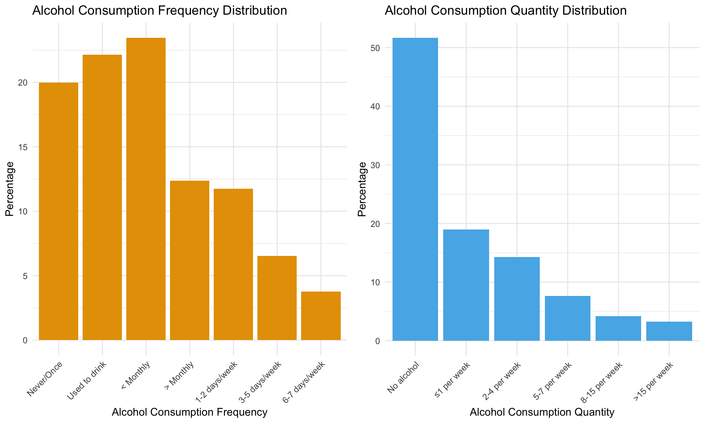
Fig3: Alcohol Consumption Frequency and Quantity Distribution
Code
invisible(plot3)
Regarding alcohol consumption frequency, we observe that the majority of respondents drink infrequently, with many reporting “Never/Once” (never drunk alcohol or have only tried it once or twice), “Used to drink” (no longer drink alcohol), or less than once a month. As the frequency of consumption increases beyond once a month, the number of people decreases. The smallest proportion of the population, less than 5%, drinks very frequently, at about 6-7 days per week.
In terms of alcohol consumption quantity, the proportion of people decreases as the amount of alcohol consumed increases. More than 50% of respondents report consuming no alcohol at all.
3.4.3 Correlation Between Frequency and Quantity
Then, we examine the relationship between alcohol consumption frequency (on the x-axis) and alcohol consumption quantity (indicated by the fill color).
Code
plot4 <-ggplot(data, aes(x =factor(ALCOHOL_FREQ),fill =factor(ALC_NUM_FREQ))) +geom_bar(color ="black", stat ="count") +labs(title ="Alcohol Consumptionn", x ="Alcohol Consumption Frequency", y ="Count", fill ="Alcohol Consumption Quantity") +theme_minimal() +scale_x_discrete(labels = alcohol_short_labels) +scale_fill_manual(values = RColorBrewer::brewer.pal(7, "Blues"),labels = alc_num_short_labels) +theme(axis.text.x =element_text(angle =45, hjust =1))plot4
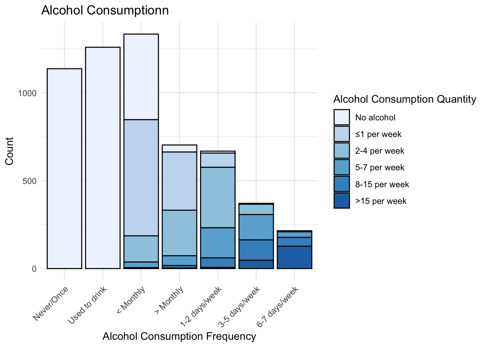
Fig4: Alcohol Consumption Frequency Distribution Filled by Quantity
Code
# cor(data$ALCOHOL_FREQ, data$ALC_NUM_FREQ)
We can find that as the alcohol consumption frequency increases, the proportion of people who consume a higher quantity of alcohol also rises. People who drink more frequently tend to report higher alcohol consumption quantities. This trend is confirmed by the strong positive correlation between alcohol consumption frequency and alcohol consumption quantity (r = 0.86). Given the high correlation and the fact that quantity is more suitable for quantitative analysis as it is quantitatively clarified, we will only focus on the quantity variable to simplify analysis.
3.4.4 Categorizing Alcohol Quantity
We group the quantity variable into categories. The three groups are given as follows:
Low: Includes “Question was not asked,” “Did not consume any alcohol in the past 30 days,” and “Average of 1 or fewer drinks per week”. These answers represent very low or no alcohol consumption
Moderate: Includes “Average of 2-4 drinks per week” and “Average of 5-7 drinks per week”. These people report a reasonable level of drinking.
High: Includes “Average of 8-15 drinks per week” and “Average of more than 15 drinks per week”. These people consume alcohol at levels that are considered excessive by common standards.
By grouping the data in this way, we reduce the data analysis complexity but maintain the key trends in alcohol consumption, making the analysis more effective.
Code
data <- data %>%mutate(ALC_NUM_CATE =case_when( ALC_NUM %in%c("Question was not asked", "Did not consume any alcohol in the past 30 days", "Average of 1 or fewer drinks per week") ~1, ALC_NUM %in%c("Average of 2-4 drinks per week", "Average of 5-7 drinks per week") ~2, ALC_NUM %in%c("Average of 8-15 drinks per week", "Average of more than 15 drinks per week") ~3,TRUE~NA_integer_ ))data <- data %>%mutate(ALC_NUM_CATE_TEXT =factor(ALC_NUM_CATE, levels =c(1, 2, 3), labels =c("Low", "Median", "High")))data <- data %>%mutate(ALC_NUM_FREQ_TEXT =factor(ALC_NUM_FREQ, levels =c(1, 2, 3, 4, 5, 6), labels =c("No alcohol", "≤1 per week", "2-4 per week", "5-7 per week", "8-15 per week", ">15 per week")))
Code
plot5 <-ggplot(data, aes(x =factor(ALC_NUM_CATE_TEXT))) +geom_bar(fill ="#6BAED6") +labs(title ="Alcohol Consumption Quantity Category Distribution", x ="Alcohol Consumption Quantity Category", y ="Count") +theme_minimal()plot5
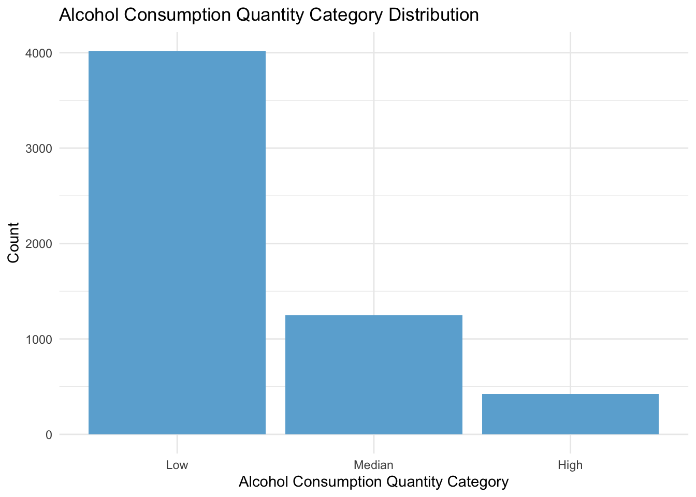
Fig5: Alcohol Consumption Quantity Category Distribution
We examine the distribution of the newly created variable, which categorizes alcohol consumption quantity. We find the same pattern as previous that as quantity increase, the number of people decrease. The majority of people fall into the “low” category. Though the “high” category contains least individuals, there are still approximately 400 samples, which is sufficient for further analysis.
3.5 Relationships Between Diseases and Alcohol Consumption
3.5.1 Alcohol Consumption Across Health Conditions
The relationship between alcohol consumption and health conditions is highlighted in the three stacked bar charts below, using the number of drinks consumed as a standard measure. These plots reveal a clear trend: individuals with high blood pressure, alcohol use disorder (AUD), or drug use disorder tend to drink more alcohol, as seen in the increasing proportion of “Yes” responses from “Low” to “High”. This pattern underscores a potential link between these conditions and elevated alcohol intake.
Code
# Define chronic diseaseschronic_diseases <-c("HIGH_BP", "HIGH_CHOL", "DIABETES", "HEART", "OVERWEIGHT", "COPD", "IMMUNE")data_cleaned_aggr <- data %>%mutate(ALC_NUM_CATE =case_when( ALC_NUM =="Question was not asked"~1, ALC_NUM =="Did not consume any alcohol in the past 30 days"~1, ALC_NUM =="Average of 1 or fewer drinks per week"~1, ALC_NUM =="Average of 2-4 drinks per week"~2, ALC_NUM =="Average of 5-7 drinks per week"~2, ALC_NUM =="Average of 8-15 drinks per week"~3, ALC_NUM =="Average of more than 15 drinks per week"~3 )) %>%mutate(ALC_NUM_CATE =factor(ALC_NUM_CATE, labels =c("Low", "Moderate", "High")))data_chronic = data_cleaned_aggr %>%select("HIGH_BP", "HIGH_CHOL", "DIABETES", "HEART", "OVERWEIGHT", "COPD", "IMMUNE", "ALC_NUM_CATE")data_mental = data_cleaned_aggr %>%select("PTSD","DEPRESSION","ANXIETY","ALC_NUM_CATE")data_use = data_cleaned_aggr %>%select("ALC_DIS", "DRUG_DIS", "ALC_NUM_CATE")
Code
# Convert data to long formatdata_long1 <- data_chronic %>%pivot_longer(cols = HIGH_BP:IMMUNE, names_to ="Disease", values_to ="Status")# Map column names to more descriptive labelslabel_mapping1 <-c("HIGH_BP"="High Blood Pressure","HIGH_CHOL"="High Cholesterol","DIABETES"="Diabetes","HEART"="Heart Disease","OVERWEIGHT"="Overweight","COPD"="COPD","IMMUNE"="Auto-immune disease")# Apply the label mappingdata_long1$Disease <-factor(data_long1$Disease, levels =names(label_mapping1), labels = label_mapping1)options(repr.plot.width =8, repr.plot.height =16)# Create the faceted bar plot with narrower barsplot6 <-ggplot(data_long1, aes(x = ALC_NUM_CATE, fill = Status)) +geom_bar(position ="fill", width =0.5) +# Adjust bar width for narrower barsfacet_wrap(~ Disease, scales ="free_y", ncol =3) +labs(title ="Proportion of Chronic Diseases Across Alcohol Consumptions",x ="Alcohol Consumption Quantity Category",y ="Proportion",fill ="Status") +scale_y_continuous(breaks =seq(0, 1, 0.5)) +theme_minimal() +theme(panel.spacing =unit(0.2, "lines")) +scale_fill_manual(values =c("No"="#E69F00", "Yes"="#56B4E9"))plot6
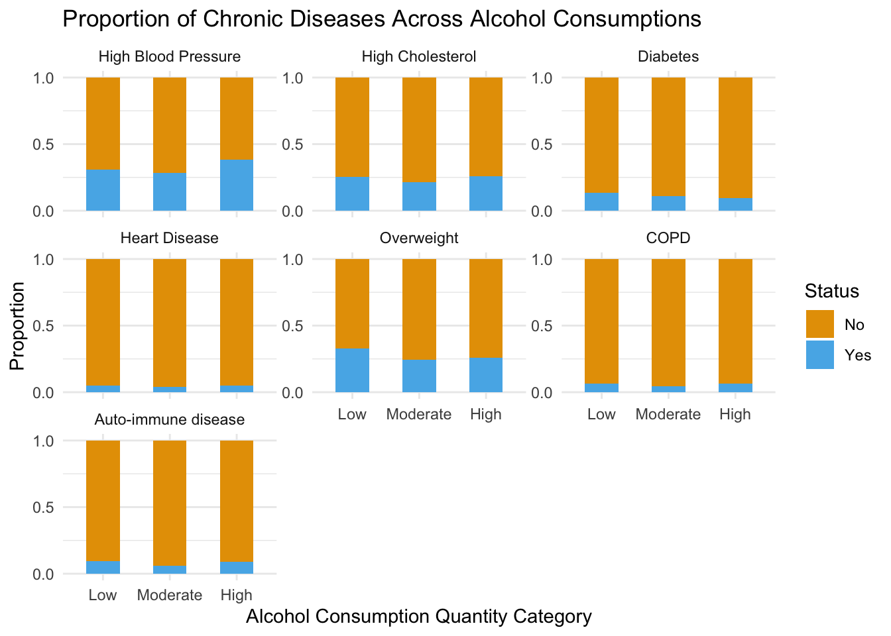
Fig6: Proportion of Chronic Diseases Across Alcohol Consumptions
Code
# Convert data to long formatdata_long2 <- data_mental %>%pivot_longer(cols = PTSD:ANXIETY, names_to ="Disease", values_to ="Status")# Map column names to more descriptive labelslabel_mapping2 <-c("HIGH_BP"="High Blood Pressure","HIGH_CHOL"="High Cholesterol","DIABETES"="Diabetes","HEART"="Heart Disease","OVERWEIGHT"="Overweight","DEPRESSION"="Depression","ANXIETY"="Anxiety","PTSD"="PTSD","ALC_DIS"="Alcohol Use Disorder","DRUG_DIS"="Drug Use Disorder")# Apply the label mappingdata_long2$Disease <-factor(data_long2$Disease, levels =names(label_mapping2), labels = label_mapping2)plot7 <-ggplot(data_long2, aes(x = ALC_NUM_CATE, fill = Status)) +geom_bar(position ="fill", width =0.5) +# Adjust bar width for narrower barsfacet_wrap(~ Disease, scales ="free_y", ncol =3) +labs(title ="Proportion of Mental Diseases Across Alcohol Consumptions",x ="Alcohol Consumption Quantity Category",y ="Proportion",fill ="Status") +scale_y_continuous(breaks =seq(0, 1, 0.5)) +theme_minimal() +theme(panel.spacing =unit(0.2, "lines")) +scale_fill_manual(values =c("No"="#E69F00", "Yes"="#56B4E9"))plot7
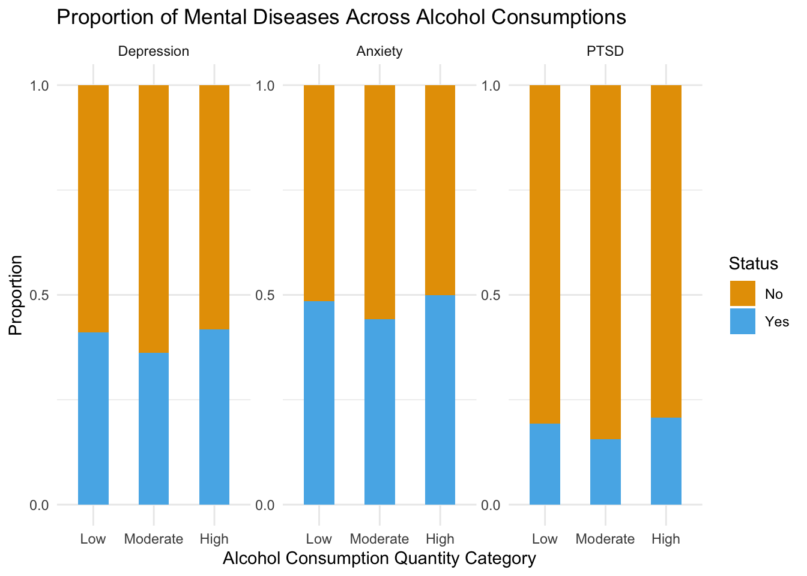
Fig7: Proportion of Mental Diseases Across Alcohol Consumptions
Code
# Convert data to long formatdata_long3 <- data_use %>%pivot_longer(cols = ALC_DIS:DRUG_DIS, names_to ="Disease", values_to ="Status")# Map column names to more descriptive labelslabel_mapping <-c("HIGH_BP"="High Blood Pressure","HIGH_CHOL"="High Cholesterol","DIABETES"="Diabetes","HEART"="Heart Disease","OVERWEIGHT"="Overweight","DEPRESSION"="Depression","ANXIETY"="Anxiety","PTSD"="PTSD","ALC_DIS"="Alcohol Use Disorder","DRUG_DIS"="Drug Use Disorder")# Apply the label mappingdata_long3$Disease <-factor(data_long3$Disease, levels =names(label_mapping), labels = label_mapping)plot8 <-ggplot(data_long3, aes(x = ALC_NUM_CATE, fill = Status)) +geom_bar(position ="fill", width =0.5) +# Adjust bar width for narrower barsfacet_wrap(~ Disease, scales ="free_y", ncol =3) +labs(title ="Proportion of Mental Diseases Across Alcohol Consumptions",x ="Alcohol Consumption Quantity Category",y ="Proportion",fill ="Status") +scale_y_continuous(breaks =seq(0, 1, 0.5)) +theme_minimal() +theme(panel.spacing =unit(0.2, "lines")) +scale_fill_manual(values =c("No"="#E69F00", "Yes"="#56B4E9"))plot8
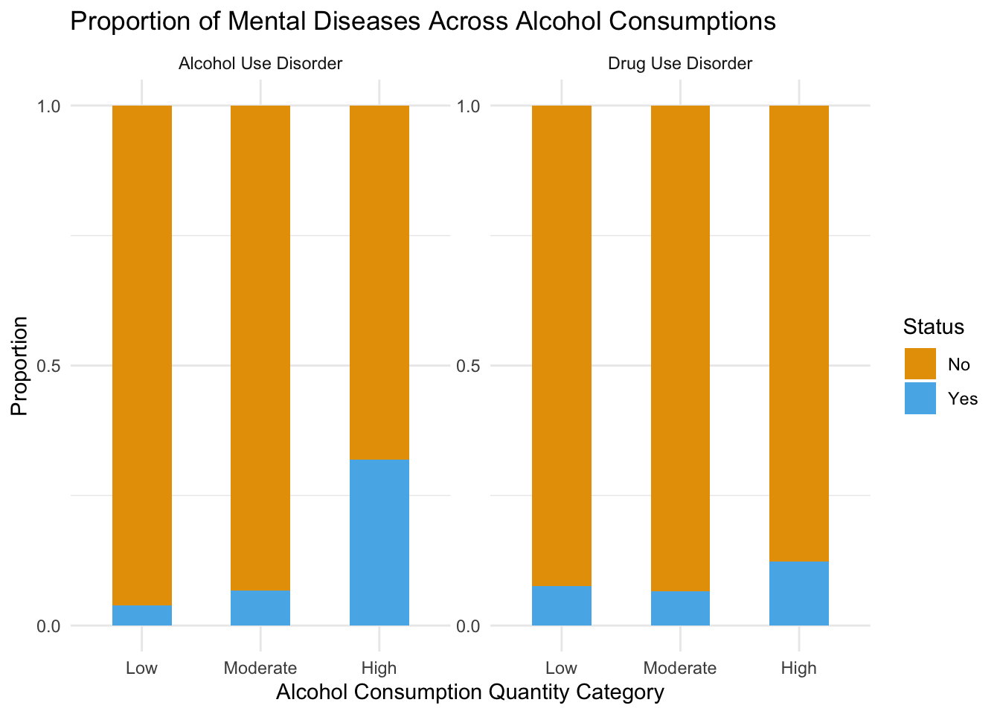
Fig8: Proportion of Mental Diseases Across Alcohol Consumptions
Following this observation, we combined the three conditions—high blood pressure, AUD, and drug use disorder—into a single feature. Individuals with any of these conditions are coded as “Yes,” while those with none are coded as “No.” The bar chart below illustrates the relationship between this combined feature and alcohol consumption. Notably, among “High frequency” drinkers—defined as those consuming 8 or more drinks per week—more than half report having at least one of these conditions.
Code
# Assuming the data frame is named 'data'# Create a new feature combining the three conditionsdata_cleaned_aggr$Combined_Condition <-ifelse( data_cleaned_aggr$HIGH_BP =="Yes"| data_cleaned_aggr$DRUG_DIS =="Yes"| data_cleaned_aggr$ALC_DIS =="Yes", "Yes", "No")# Check the distribution of the new feature# table(data_cleaned_aggr$Combined_Condition)# Analyze the relationship with alcohol consumption# Assuming 'ALC_NUM_CATE' represents alcohol consumption categoriesplot9 <-ggplot(data_cleaned_aggr, aes(x = ALC_NUM_CATE, fill = Combined_Condition)) +geom_bar(position ="fill", width =0.6) +labs(title ="Relationship Between Combined Condition and Alcohol Consumption",x ="Alcohol Consumption Quantity Category",y ="Proportion",fill ="Combined Condition" ) +theme_minimal() +theme(panel.grid.minor =element_blank()) +scale_fill_manual(values =c("No"="#E69F00", "Yes"="#56B4E9"))plot9
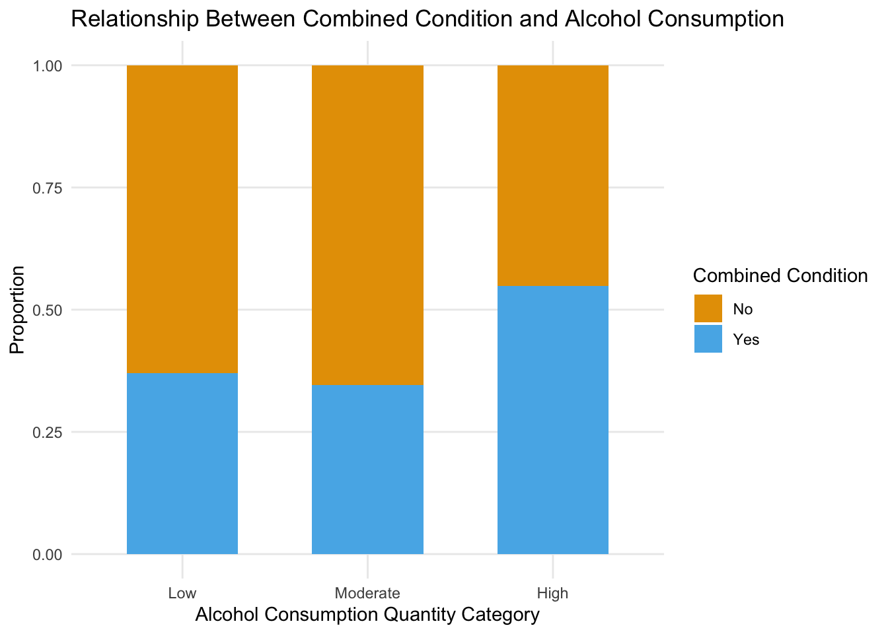
Fig9: Relationship Between Combined Condition and Alcohol Consumption
3.5.2 Mental Health Conditions Linked With High Alcohol Consumption
Base on the finding in figure 2: the three typical mental health disorders and two types of addictions form groups with significant pairwise correlations in the heatmap, and given that these five conditions are commonly understood to be interconnected, we created this alluvial diagram to visualize the relationships between these variables and the outcome variable.
Fig10: The Relationship Between Mental Health, Substance Use Disorders, and Alcohol Consumption
We observe that individuals without mental health or substance use disorders generally have low alcohol consumption. Conversely, people with substance use disorders and some mental health conditions (e.g., PTSD) transition to higher alcohol consumption frequencies (moderate or high), suggesting alcohol consumption may be associated with these conditions. For high alcohol consumption, relatively high people experiencing AUD. For those in the moderate alcohol consumption, there are some people experience depression, anxiety and PTSD simultaneously. This may suggest that moderate alcohol consumption is more associated with mental health struggles.
As hypothesized, people with mental health issues (e.g., anxiety, depression) might use alcohol as a coping mechanism, increasing the likelihood of medium or high alcohol consumption.
3.5.3 Alcohol Use Disorder Does Not Always Imply Heavy Drinking
From Figure 10, we observe that individuals with Alcohol Use Disorder (AUD) are distributed across all levels of alcohol consumption, not just concentrated in the high-consumption group. Some of you might question our inclusion of AUD in the feature, as we often assume that having AUD implies drinking abusively. However, this is not necessarily the case.
Code
# Filter data for individuals with Alcohol Use Disorderaud_people <- data_cleaned_aggr[data_cleaned_aggr$ALC_DIS =="Yes", ]# Calculate the distribution of alcohol consumption categories among AUD peopleaud_consumption <-table(aud_people$ALC_NUM_CATE)# Convert to a data frame for plottingaud_consumption_df <-as.data.frame(aud_consumption)colnames(aud_consumption_df) <-c("Alcohol_Consumption", "Count")# Calculate percentages for the pie chartaud_consumption_df$Percentage <- (aud_consumption_df$Count /sum(aud_consumption_df$Count)) *100plot11 <-ggplot(aud_consumption_df, aes(x ="", y = Count, fill = Alcohol_Consumption)) +geom_bar(stat ="identity", width =1) +coord_polar("y") +geom_text(aes(label =paste0(round(Percentage, 1), "%")), position =position_stack(vjust =0.5), size =3 ) +labs(title ="Alcohol Consumption Categories Among AUD Individuals",fill ="Alcohol Consumption Quantity Category" ) +scale_fill_manual(values =c("Low"="#EC6B80", "Moderate"="#FFC154", "High"="#47B39C") # Custom colors ) +theme_minimal() +theme(axis.title.x =element_blank(),axis.title.y =element_blank(),axis.text =element_blank(),panel.grid =element_blank() )plot11
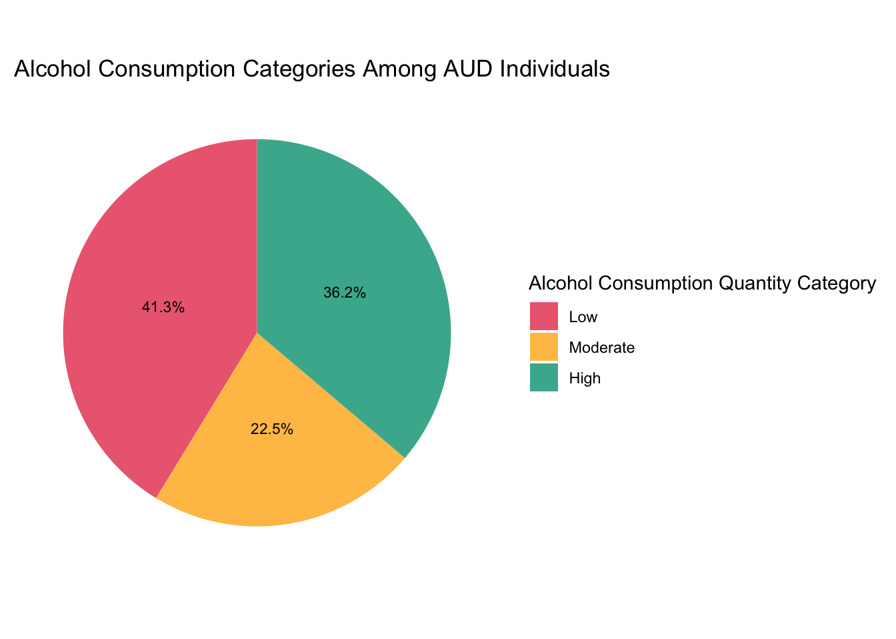
Fig11: Alcohol Consumption Categories Among AUD Individuals
The pie chart below shows the distribution of alcohol consumption categories—Low, Moderate, and High—among individuals with AUD. Notably, a significant portion of those with AUD fall into the “Low” (36.2%) and “Moderate” (22.5%) categories, which means that about 60% AUD individuals drink less than 8 drinks per week. These finding challenges conventional perceptions and highlights the diverse drinking patterns among those with AUD, also justifying our feature. We see this discrepancy because AUD is not solely about how much alcohol someone consume, but also considers patterns of drinking, loss of control, and the impact on daily life. For instance, someone with AUD may drink moderately but struggles difficult to stop, or someone may actively try to cut down alcohol use after diagnosing AUD.
To explore this further, we analyzed the relationship between AUD and Alcohol consumption frequency using the more accurate categorization (the original 6 levels one) frequency.
Code
data_percent <- data |>group_by(ALC_NUM_FREQ) |>count(ALC_DIS) |>mutate(percent = n /sum(n) *100)data_percent_disorder <- data |>group_by(ALC_DIS) |>count(ALC_NUM_FREQ) |>mutate(percent = n /sum(n) *100)plot12a <-ggplot(data_percent_disorder, aes(x =factor(ALC_DIS), y = percent, fill =factor(ALC_NUM_FREQ))) +geom_bar(stat ="identity",color ="black") +theme_minimal() +labs(x ="Alcohol Use Disorder",y ="Percentage",fill ="Alcohol Quantity") +scale_fill_manual(values = RColorBrewer::brewer.pal(6, "Blues"),labels = alc_num_short_labels ) +scale_x_discrete(labels =c("No", "Yes")) +scale_y_continuous(labels = scales::percent_format(scale =1)) +theme(axis.text.x =element_text(angle =0, hjust =0.5))plot12b <-ggplot(data_percent, aes(x =factor(ALC_NUM_FREQ), y = percent, fill = ALC_DIS)) +geom_bar(stat ="identity") +theme_minimal() +labs(x ="Alcohol Consumption Quantity Category",y ="Percentage",fill ="Alcohol Disorder") +# scale_fill_manual(# values = RColorBrewer::brewer.pal(7, "BrBG")[c(2, 6)]) + scale_fill_manual(values =c("No"="#E69F00", "Yes"="#56B4E9")) +scale_x_discrete(labels = alc_num_short_labels) +scale_y_continuous(labels = scales::percent_format(scale =1))+theme(axis.text.x =element_text(angle =45, hjust =1))# 左右拼接图plot12 <-grid.arrange(plot12a, plot12b, ncol =2,heights =c(5, 1), top ="Relationship Between Alcohol Consumption and Alcohol Use Disorder")
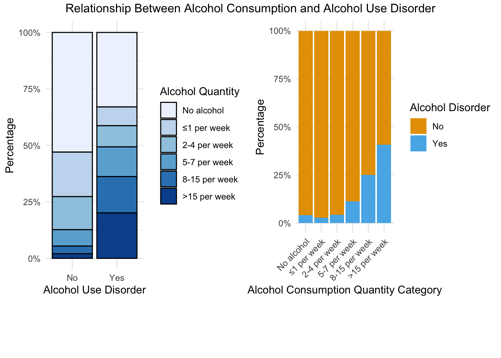
Fig12: Relationship Between Alcohol Consumption and Alcohol Use Disorder
Code
invisible(plot12)
From the left plot of Figure 12, as we observed before in figure 11, the proportion of individuals who drink less than 8 per week is the majority of AUD population. And those do not drink alcohol is the largest in the disorder group.
3.5.4 People With Alcohol Use Disorder More Likely To Engage In Heavy Drinking
From the left plot of Figure 12, we can also observe that people with AUD has a higher proportion of individuals who consume alcohol at higher frequencies (8-15 drinks per week and more than 15 drinks per week) than those without disorder. The disorder group shows more severe alcohol consumption issues compared to the non-disorder group. This indicates more serious alcohol-related problems within AUD group.
From the right chart of Figure 12, as alcohol consumption frequency increases, the proportion of people with AUD increase. The results of the Chi-Square indicate a statistically significant association between AUD and alcohol consumption frequency (\(X^2 = 558.63, p < 0.001\)). This result confirm that higher level of alcohol consumption is associated with a greater likelihood of AUD, even though individuals with the AUD are present across all levels of consumption and fewer in heavy consumption.
Though 60% of individuals with AUD consume fewer than 8 drinks per week, the refined categorization of the dependent variable allows us to detect meaningful differences between healthy individuals and those with AUD. In summary, although AUD should not be simplistically equated with heavy drinking, individuals with AUD indeed have a higher likelihood of engaging in heavy drinking. Thus, the drinking behaviors of individuals with AUD deserve more attention and targeted interventions.
Our interactive design aims to highlight the overlap between individuals with Alcohol Use Disorder (AUD) and those who are heavy drinkers. The visualization shows that while there is a significant relationship between AUD and heavy drinking, it is not absolute. Readers can explore these patterns in the ‘Interactive graph’ section to investigate the data interactively.